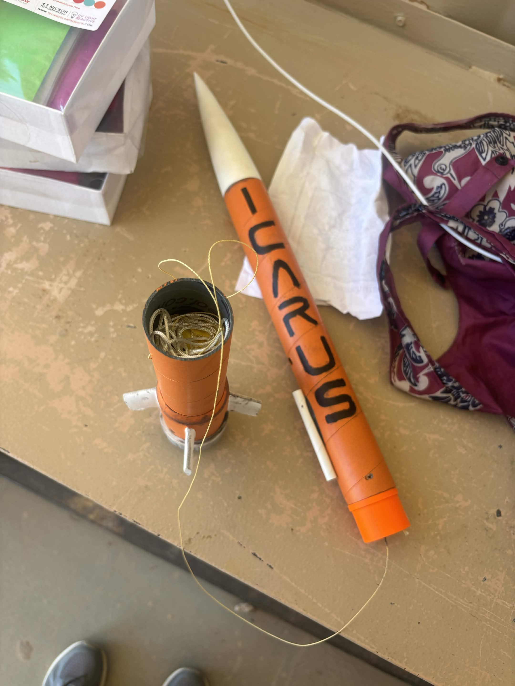
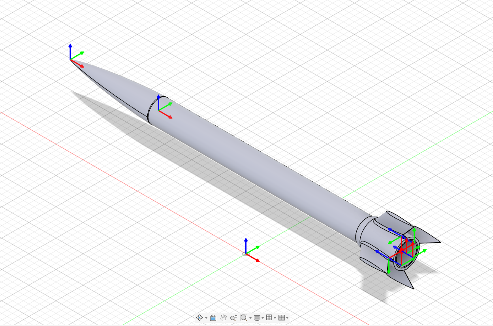
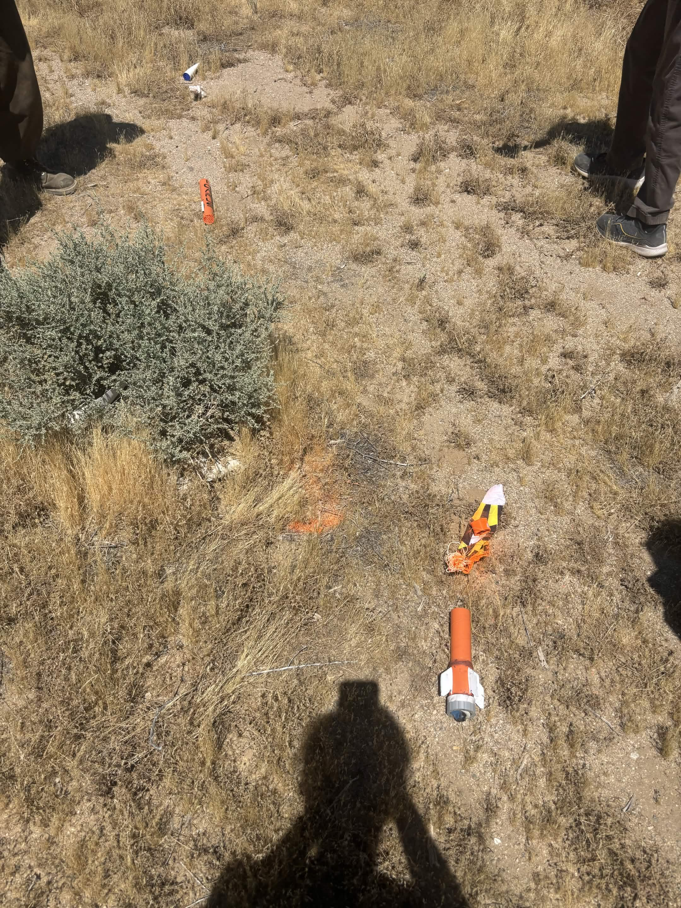

G-Class Motor - Model Rocket

Overview
Co-engineered with a five-person team to design, simulate, fabricate, and launch a G-Class model rocket. The goal of this project was to design and build a rocket from scratch capable of flying on a G-Class motor.

Project Workflow
The rocket was developed through an iterative design process involving CAD modeling, flight simulation, fabrication, and physical assembly.
- Designed and developed a model rocket from the ground up.
- Created and refined the rocket's components in CAD using SOLIDWORKS.
- Simulated the rocket's flight performance in OpenRocket to evaluate stability and expected performance prior to launch.
- Accounted for center of mass and aerodynamic stability throughout the design process.
- Iterated on component designs based on simulation results and manufacturing constraints.
- Manufactured the fin can and nose cone using 3D printing.
- Assembled the rocket using friction-fit and heat-pressed joints, then tested it as a five-person engineering team.
- Launched the rocket.
Tools & Technologies
- SOLIDWORKS: CAD modeling and component design.
- OpenRocket: Flight simulation and stability analysis.
- 3D Printing: PLA printing and fabrication tolerancing.
- Avionics: Arduino Nano, BMP280 pressure sensor, Adafruit accelerometer/gyroscope, 9V battery, SD card, and onboard camera.

Results
- The rocket crashed due to a miscalculation of the actual center of pressure and mass.
- OpenRocket simulations were used to evaluate the rocket's predicted flight trajectory; however, the analysis relied solely on theoretical values rather than the rocket's actual measured center of mass.
- Captured onboard camera footage of the flight.
- Gained hands-on experience taking an engineering concept from CAD and simulation through fabrication and testing.
- Learned the importance of validating simulation results against real, measured physical properties.
